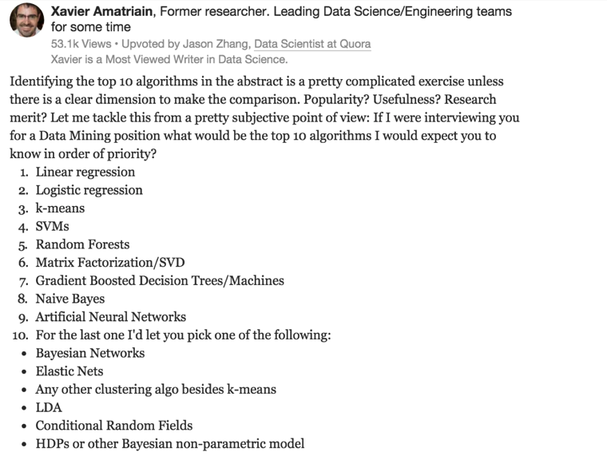
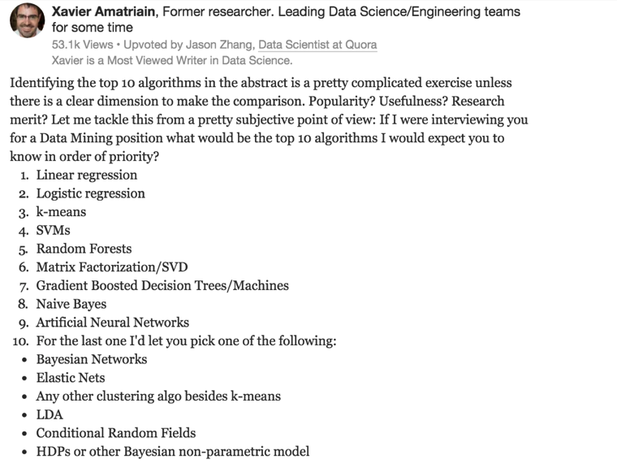

Machine Learning References
24/11/15 08:45
Lasso
http://web.stanford.edu/~hastie/Papers/B67.2%20%282005%29%20301-320%20Zou%20&%20Hastie.pdf
http://www.cs.nyu.edu/~mohri/mlu/mlu_lecture_3.pdf
http://colah.github.io/posts/2015-08-Understanding-LSTMs/
Neural Network and Deep Learning
http://neuralnetworksanddeeplearning.com/
Linear Algebra
https://www.math.ucdavis.edu/~linear/linear-guest.pdf
Andrew Ng
http://openclassroom.stanford.edu/MainFolder/CoursePage.php?course=MachineLearning
https://www.quora.com/What-are-the-top-10-data-mining-or-machine-learning-algorithms/answer/Xavier-Amatriain

http://web.stanford.edu/~hastie/Papers/B67.2%20%282005%29%20301-320%20Zou%20&%20Hastie.pdf
http://www.cs.nyu.edu/~mohri/mlu/mlu_lecture_3.pdf
http://colah.github.io/posts/2015-08-Understanding-LSTMs/
Neural Network and Deep Learning
http://neuralnetworksanddeeplearning.com/
Linear Algebra
https://www.math.ucdavis.edu/~linear/linear-guest.pdf
Andrew Ng
http://openclassroom.stanford.edu/MainFolder/CoursePage.php?course=MachineLearning
https://www.quora.com/What-are-the-top-10-data-mining-or-machine-learning-algorithms/answer/Xavier-Amatriain

blog comments powered by Disqus